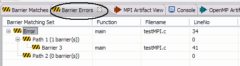

PLDT - New and Noteworthy
PLDT - New and Noteworthy
What's new in 2.0
- New single-menu UI for PLDT analysis features simplifies the editor toolbar.

- MPI Barrier Analysis detects potential deadlocks in MPI applications,
and shows barrier matches, barrier errors, and paths of all barrier
matching sets. Includes detections across multiple functions and source files.


For details, see MPI Barrier Analysis.
- New project templates allow easy creation of MPI and OpenMP projects.
Sample source files can be added during project creation as well.

- MPI project settings page can add include files, build command, etc. to new MPI projects

- If CDT version is incorrect (!= 4.x) an error dialog complains.
- Welcome page includes pointers to information for PLDT.
- Artifact markers can be removed directly from the artifacts view.

- Tracing is enabled. See tracing instructions for how to turn this on.
Back to Table of Contents